[!一句话版本：
ggbreak从 0.0.1 到 0.2.x 的截断功能，一篇收齐：scale_x_break()/scale_y_break()设置断点，同一个轴想切几刀就叠几个；断口可以画斜杠、调缝宽、自定义刻度；scales决定每段占多宽；分面、双轴、coord_flip()、patchwork都接得住。]
2021年5月8号，校内杨老师组织的小型会议上，我讲了 ggtree，朱老师问我，枝长特别长的情况下，能不能截断。
我以前是觉得，坐标轴有啥好截断的，做个数据转换（比如 log）就行了。这一问，让我想到数据就单纯只是有 outliers，而 outliers 是有意义的，转换解决不了，截断确实是个好方法。下一个教授演讲的时候，我大概想了一下设计；第二天早上参加答辩，下午晚上带娃，想清楚了该怎么做。抄作业容易，原创却难，我想如果不是先写了 plotbb 和 aplot 两个包，应该也不会有这么快。
第三天早上，花两小时把想法写出来，v0.0.1 出来了，奠定了包的基调和设计框架。一个包的设计，才是包的品味，能干活不算什么，能让用户毫无学习成本，用着觉得爽，才是真的好。
之后博士生徐双斌（ggtreeExtra 的作者）接手支持多个断点，顺手支持了 scale_x/y_reverse，v0.0.2 上线 CRAN；后面我又提了不少要求，一一实现，v0.0.3 和大家见面。麻雀虽小，五脏俱全。这些年陆续加的东西，今天一篇说完。
为什么要截断
数据分布不呈现正态，有些数据特别大，大部分又比较小，画出来的图没法看。数据符合 log normal 分布的话，对数转换就能解决，但数据不一定符合某种分布，有时候只是单纯有几个 outliers，而且这些 outliers 是有意义的，不能删。
系统发育树就是典型的例子：引入一个外类分支（outgroup），它的支长可能特别长，整棵树被压缩到看不清主体。别的图形也一样，截断是很好的解决方案。
通过操作数据来达到目标是不可取的，它只适合柱状图这类简单的图；复杂的图，数据变了图就变了。最好的方法是在原图上设置窗口，把中间要截掉的那块拿走，再拼在一起。借由拿走的那块，为图的细节部分增加空间，所以本质上是拼图，对任何图形都适用。
别人的解决方案都是简单粗暴地拼图，一拼图就死了。没拼之前，你可以继续加图层，但看不清细节（比如柱状图上标 p 值）；截断之后，看是看清了，但没法再加图层，因为图被搞死了。
ggbreak 要解决的就是这个：图一画，有 outlier，先截断，在看清楚细节的情况下，继续用 ggplot2 的语法搞事。
两个标尺函数
Gap plot，通常说的截断，只有两个函数，scale_x_break() 和 scale_y_break()。
library(ggplot2)
library(ggbreak)
library(patchwork)
set.seed(2019-01-19)
d <- data.frame(x = 1:20,
y = c(rnorm(5) + 4, rnorm(5) + 20, rnorm(5) + 5, rnorm(5) + 22))
p1 <- ggplot(d, aes(y, x)) + geom_col(orientation = "y")
d2 <- data.frame(x = c(2, 18), y = c(7, 26), label = c("hello", "world"))
p2 <- p1 + scale_x_break(c(7, 17)) +
geom_text(aes(y, x, label = label), data = d2, hjust = 1, colour = "firebrick") +
xlab(NULL) + ylab(NULL) + theme_minimal()
p1 + p2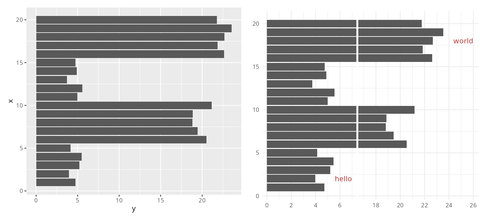
左边是原图，右边切了一刀，还能接着加 geom_text()，这就是当初设计的目标。
断轴的原理，一句话：一个 break 是两个窗口，每个窗口都拿到整份数据，各自把不属于自己的那部分遮掉。它不切数据，是遮出来的。为什么这件事值得单独说，见《你的断轴图里，藏着一根30层楼高的柱子》。
一个轴切几刀
这个需求是 @abertran3 在 GitHub 上提的（#81）。他说他的数据在二维空间里散成好几坨，一坨跟一坨之间空一大段，一个轴切一刀不够用。我看了他的图就明白，这不是我的设计漏了，是我当初没料到有人真会在一个轴上切好几刀。
set.seed(2023-01-01)
df <- data.frame(
x = c(rnorm(50, 5, 1), rnorm(10, 50, 2)),
y = c(rnorm(50, 10, 2), rnorm(10, 100, 5)),
group = c(rep("Cluster 1", 50), rep("Cluster 2", 10)))
p <- ggplot(df, aes(x, y, color = group)) +
geom_point(size = 3) +
theme(legend.position = "top")
p + scale_x_break(c(10, 20)) +
scale_x_break(c(30, 45)) +
scale_y_break(c(20, 40)) +
scale_y_break(c(60, 90))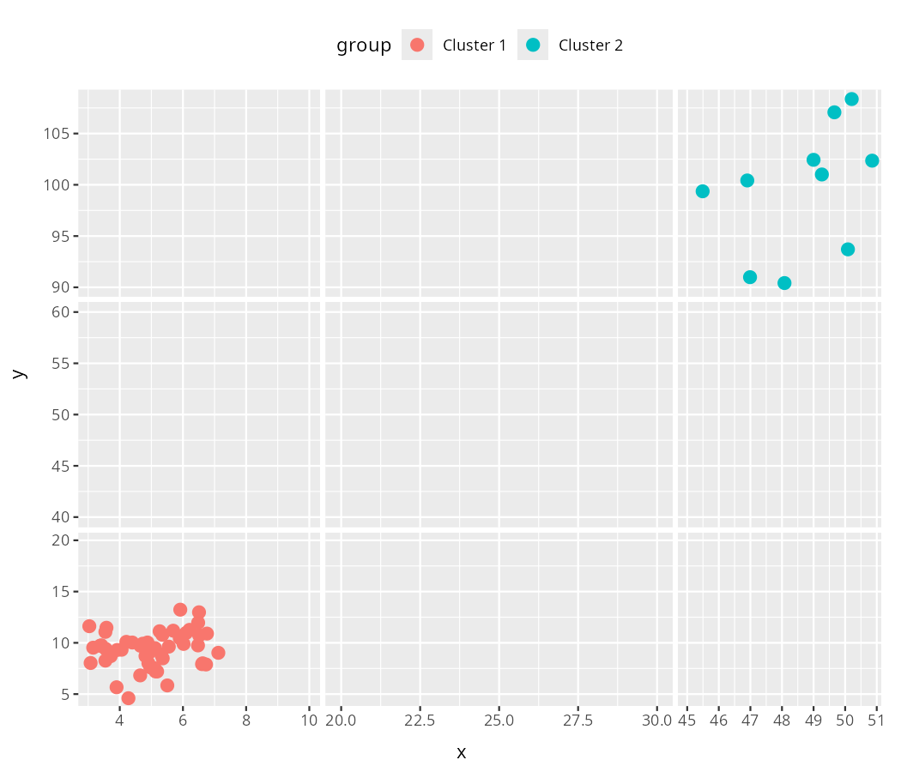
x 轴切了两刀，y 轴又切了两刀，四条空白把数据区域分开。想切几刀，就叠几个。 同一个轴上叠几个 scale_*_break() 都行，它们会合并成一个列表；x 轴和 y 轴各管各的，互不影响。
断口画个斜杠
还有一类需求是纯视觉的：轴上的数字跳了，中间也空了，但看着还是不够「断」，非得在断口画个记号心里才踏实。
symbol 参数管这个，目前只支持最经典的 slash，也就是双斜杠（#76）：
ggplot(mpg, aes(displ, hwy)) +
geom_point() +
scale_x_break(c(3, 4), symbol = "slash")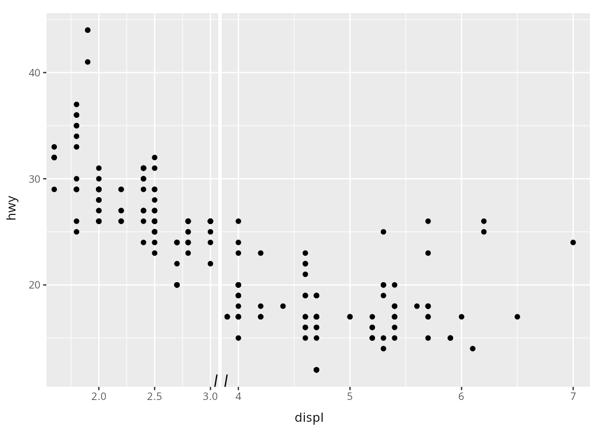
断口两边各一道斜杠，合起来就是论文里见得最多的那个记号。说实话这个我还没做到好，图你自己看就知道，斜杠小得很，得凑近了才看得见。我先让它有，回头再让它像样。
scales 分的是空间
砍掉中间那段空白，只是截断的一半，另一半是抢空间。管这件事的参数叫 scales，它跟不少人想的不一样：它缩的不是数据，是子图占的物理空间。
我把默认值定成 "fixed"，每一段按自己覆盖的数据范围来分宽度，一段跨了 0 到 7，另一段跨了 21 到 23.5，前者本来就该比后者宽得多，这个比例关系保留下来。设成 "free"，所有段一样宽；也可以直接给数字，表示这一段相对第一段占多少，"free" 其实就是数字 1。
p1 + scale_x_break(c(7, 21), scales = "fixed") # 上
p1 + scale_x_break(c(7, 21), scales = "free") # 下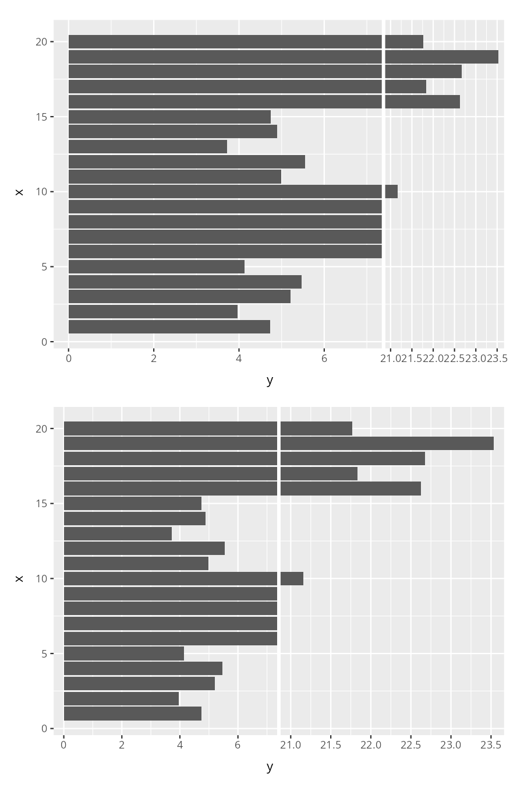
上面那版左边一段明显宽，因为跨度本来就大 2.8 倍，读者能读出真实量级；下面那版两段一样宽，好看了，但比例关系是假的。要读者读出「这两组差一个量级」，用 fixed；只要他看清每一组内部的差别，free 更省事。
一刀不够就叠，每一刀都能带自己的 scales，这就有意思了：
p1 + scale_x_break(c(7, 17), scales = 1.5) +
scale_x_break(c(18, 21), scales = 2)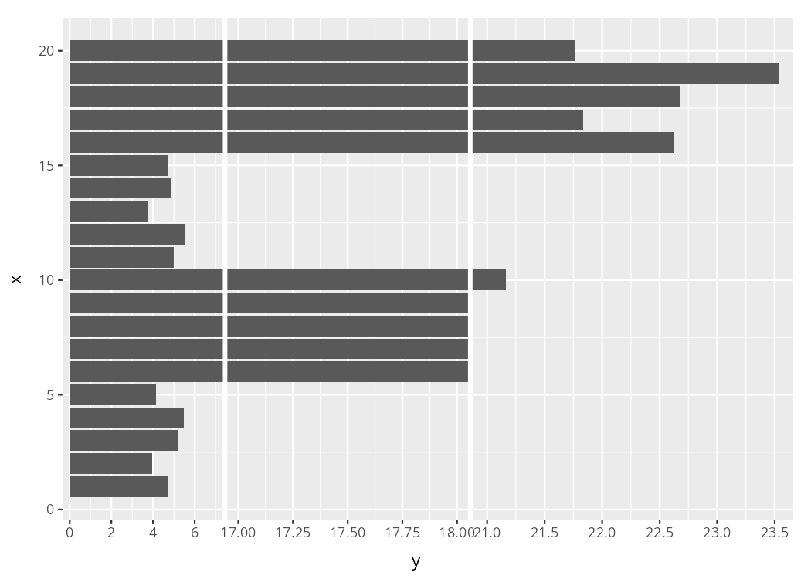
原本挤在一起的柱子舒展了，你想在柱状图上标个 p 值也终于有地方放。空白少给点，数据密的地方多给点，图还是那张图，空间是你分配的。
缝宽和刻度
两截之间的缝，宽度由 space 控制，默认 0.1 厘米。
g <- ggplot(d, aes(x, y)) + geom_col()
g + scale_y_break(c(7, 18), space = 0.5)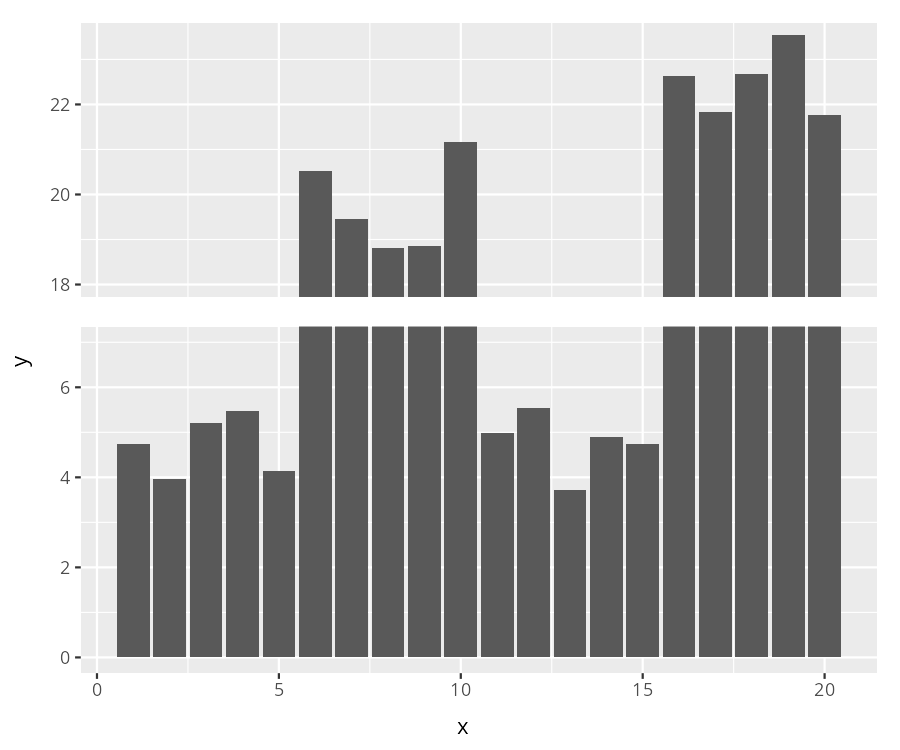
想多宽有多宽，想多窄有多窄。但也别拉太狠，缝留得太宽，读者会以为那是两张图拼的。我默认给 0.1 厘米，就是想让这个缝说「这里跳过了东西」，而不是一个普通的间隔。
ggbreak 会自己算切开之后每一段的刻度，算出来的数字不一定合你意，也可能你只想留几个关键值，那就用 ticklabels 覆盖它：
g +
scale_y_break(c(7, 10), ticklabels = c(10, 11.5, 13)) +
scale_y_break(c(13, 17), ticklabels = c(17, 18, 19))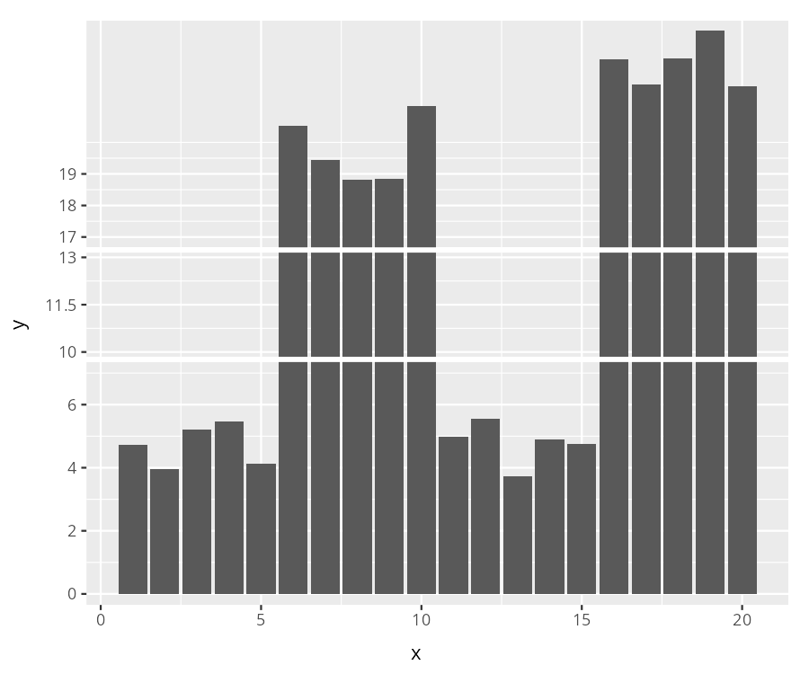
传给它的值得在真实数据范围内，随手编一个出来位置是对不上的。这个参数每一段单独给，有几个断点就写几组，段数和组数对不上就乱了。
反转和变换
scale_y_reverse() 这类反转，跟截断随便叠：
g2 <- g + scale_y_break(c(7, 17), scales = 1.5) +
scale_y_break(c(18, 21), scales = 2) + scale_y_reverse()
g + g2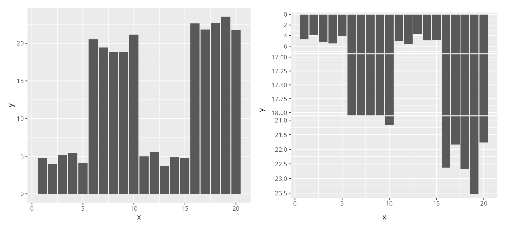
scale_x_log10()、scale_x_sqrt() 这些坐标轴变换，也一样能用：
pa <- p1 + scale_x_break(c(7, 17))
pb <- p1 + scale_x_break(c(7, 17)) + scale_x_log10()
pa + pb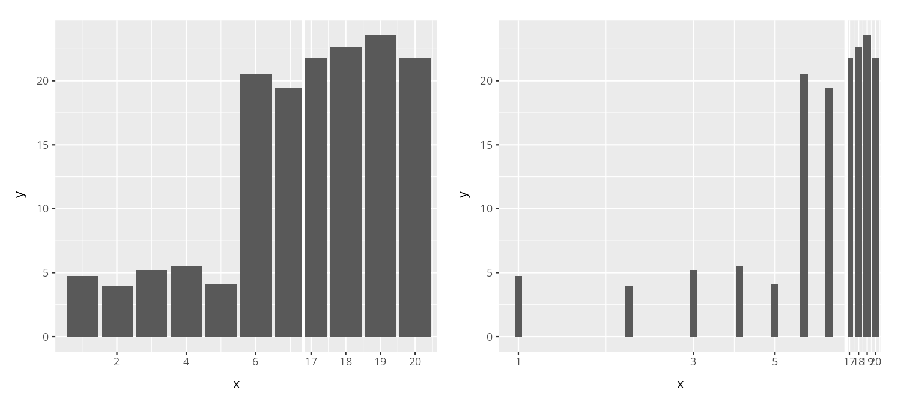
分面，双轴，coord_flip
单轴的柱状图谁都会切，麻烦的是分面、coord_flip()、sec.axis 这些一起上，很多截断工具到这一步就散了。
分面之后每个 panel 里都有 outlier 的情况太常见了，facet_grid() 和 facet_wrap() 都能用，写法和不截断的时候完全一样，不需要为了断轴去改分面的写法：
set.seed(2019-01-19)
df2 <- data.frame(
x = 1:20,
y = c(rnorm(5) + 4, rnorm(5) + 20, rnorm(5) + 5, rnorm(5) + 22),
group = c(rep("A", 10), rep("B", 10)))
pf <- ggplot(df2, aes(x = x, y = y)) +
geom_col(orientation = "x") +
scale_y_reverse() +
facet_wrap(group ~ ., scales = "free_y",
strip.position = "right", nrow = 2) +
coord_flip()
pf + scale_y_break(c(7, 17), scales = "free") +
scale_y_break(c(19, 21), scales = "free")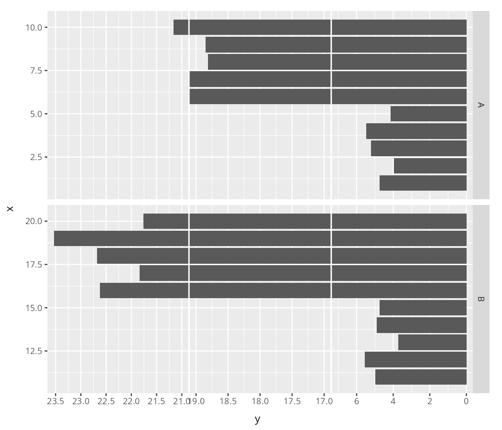
分面截断真正的难点，我自己踩下来的体会是窗口和分面的嵌套关系。facet_grid() 有行有列，窗口得嵌进每一行、每一列里面去，不能简单摞在外面，否则同一行的两个分面会被拆到不同的窗口里。0.2.0 之前这一段是打了折的：facet_grid() 断轴之后窗口叠在分面外面，行会排成 A B A B 而不是 A A B B；scales = "free_y" 时轴范围只取第一个 panel，落在外面的点直接丢掉。这两个我在 0.2.0 里都修好了。
主副轴联动也很典型：左边绝对数值，右边 sec.axis 换算一下，你对主轴切一刀，副轴不跟着断，右边那些刻度会集体错位，这张图就废了。这个不用你操心，主轴和副轴会在同一个相对位置一起断：
ggplot(mpg, aes(displ, hwy)) +
geom_point() +
scale_y_continuous(
"mpg (US)",
sec.axis = sec_axis(~ . * 1.20, name = "mpg (UK)")) +
scale_y_break(breaks = c(20, 30))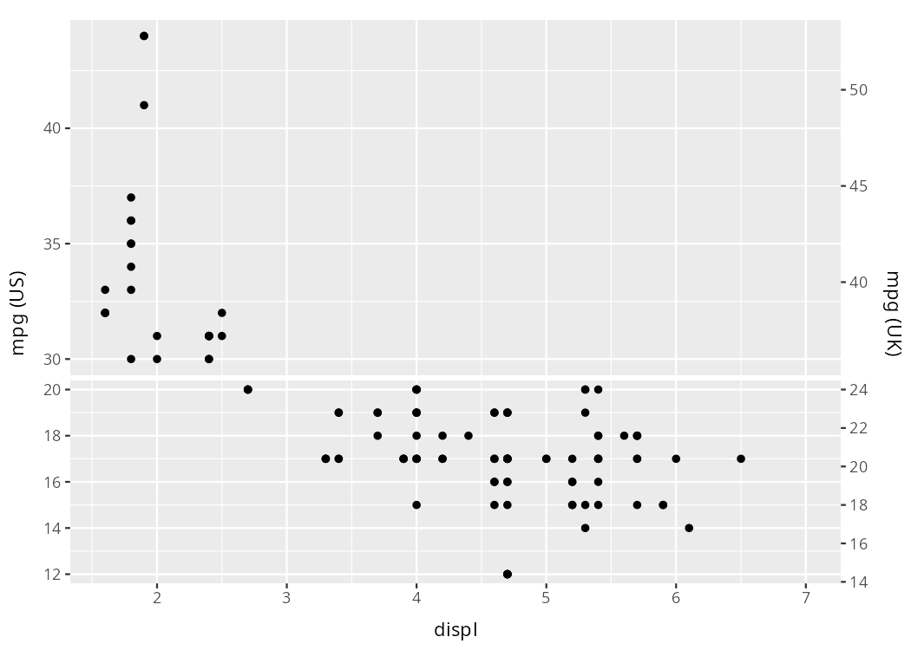
左右两边断在同一行上，读者一眼就能把两个刻度对上。
coord_flip() 也行：
g + coord_flip() + scale_y_break(c(7, 18))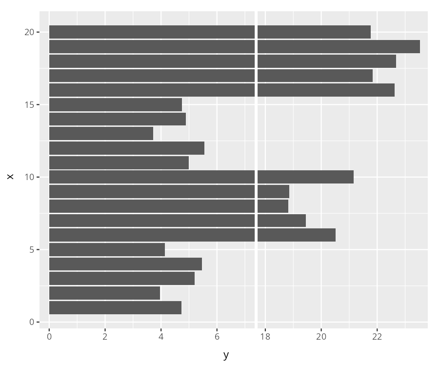
图例和标签
截断图本质上是拼图，图例偶尔会被挤到不合适的地方。没有专门的参数，用 ggplot2 原来的办法就行，theme(legend.position = ...)。
标题、副标题、tag、caption，这些图标签全都兼容：
pg <- pf + aes(fill = group)
pg + labs(title = "test title", subtitle = "test subtitle",
tag = "A tag", caption = "A caption") +
theme_bw() +
theme(strip.placement = "outside",
axis.title.x = element_text(size = 10),
plot.title = element_text(size = 22),
plot.subtitle = element_text(size = 16),
plot.tag = element_text(size = 10),
plot.title.position = "plot",
plot.tag.position = "topright",
plot.caption = element_text(face = "bold.italic"))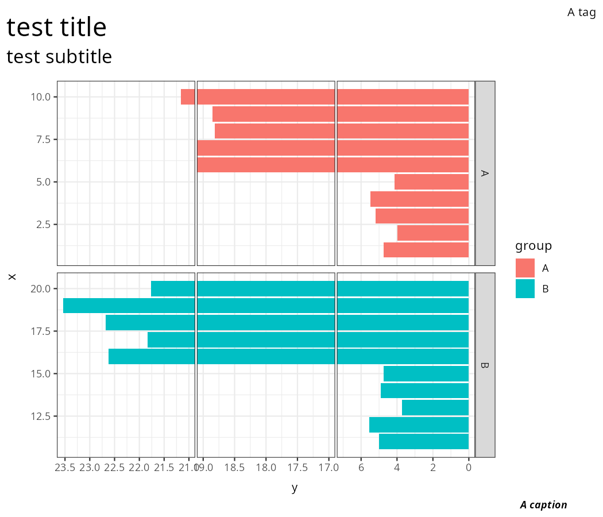
拼图
patchwork 直接拼：
x <- g + scale_y_break(c(7, 17))
x + g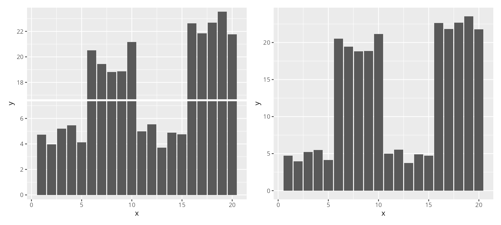
以前 cowplot、gridExtra 这些会把断轴静默吃掉，patchwork 拼图轴对不齐，0.2.0 我从 ggplotGrob() 的根上修好了，来龙去脉见《断轴图谁都处不好》。当然你要是图省事，aplot 跟断轴图一直是完全兼容的，混着拼随便拼。
还有两招
截断之外，ggbreak 还有两招，一篇装不下了，分开写：长坐标轴折成多行的 scale_wrap()，和不找空白直接切片的 scale_x_cut() / scale_y_cut()，见《长图折成几行，挤的地方放大》。
- 断轴的原理与一个看不见的坑，见《你的断轴图里，藏着一根30层楼高的柱子》。
ggbreak的论文引用：S Xu, M Chen, T Feng, L Zhan, L Zhou, G Yu. Use ggbreak to effectively utilize plotting space to deal with large datasets and outliers. Frontiers in Genetics. 2021, 12:774846.- 有想法或者遇到问题，还是到 GitHub 上提。